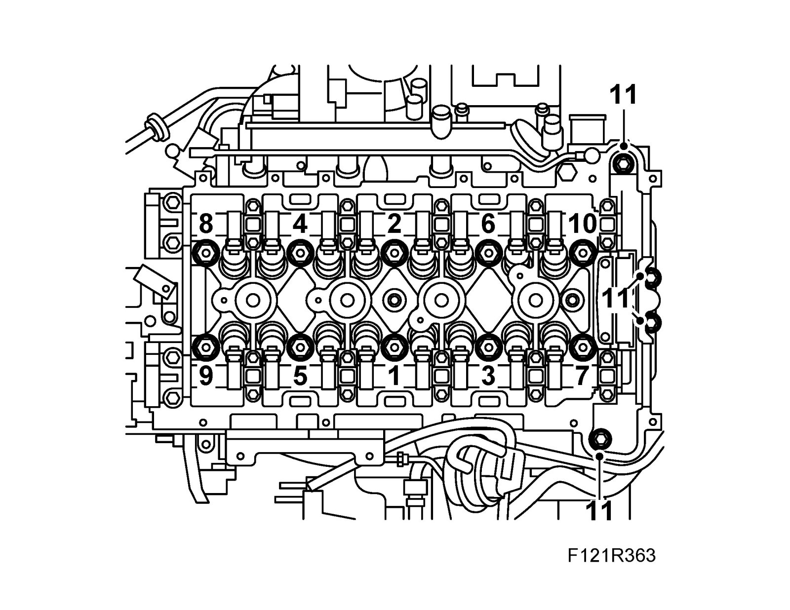
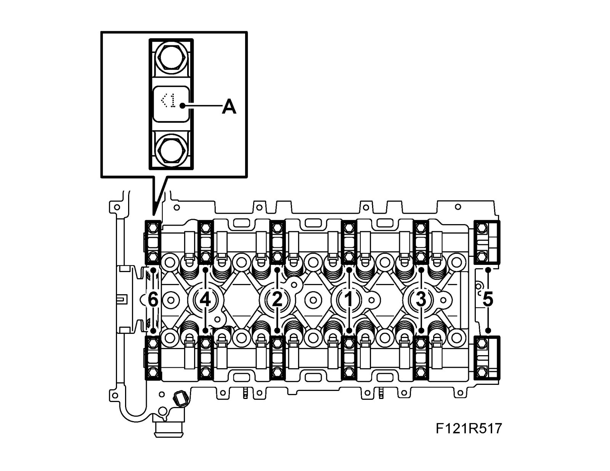

Cylinder Head Assembly
Cylinder head
Tightening torque, step 1 30 Nm (22 ft lb)
Tightening torque, step 2 150°
Tightening torque, step 3 15°
Tightening torque, bolts for timing section 35 Nm (26 ft lb)
Camshaft bearing cap 22 Nm (16 ft lb)

Camshaft gear Specifications
Intake manifold Specifications
Exhaust manifold Specifications